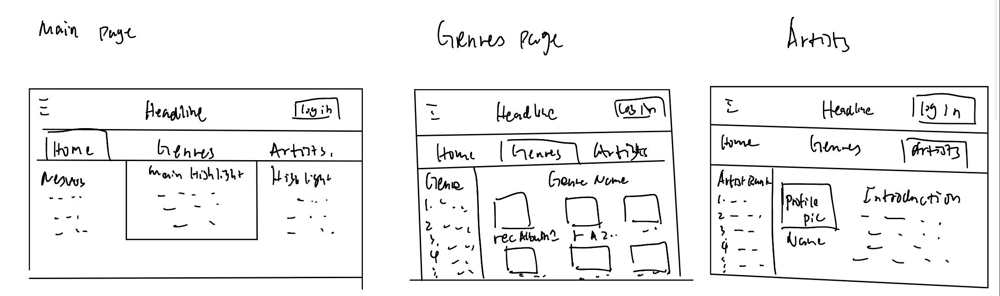

The website will serve as a platform to explore and discuss various music genres, artists, and their impact on culture and society. It will facilitate music enthusiasts and researchers to dive deep into the realms of musical diversity and expressions.
Our intended audience includes music enthusiasts, students, educators, and researchers who are interested in exploring and learning about different aspects of music.
The design will be vibrant yet elegant, using a mix of modern and retro elements to resonate with the musical theme. The color scheme will be a blend of black, white, and warm colors, enhancing the visual appeal and user experience.
The website will consist of at least three main sections/pages:
Planning to implement additional features like:
Below are the wireframes representing the layout of the webpages:
